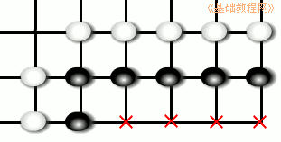
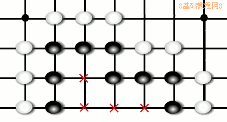
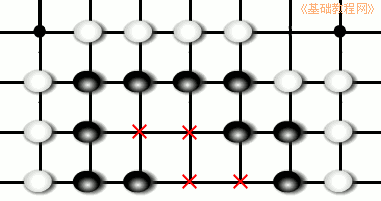
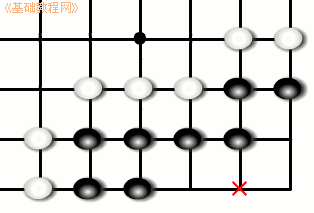
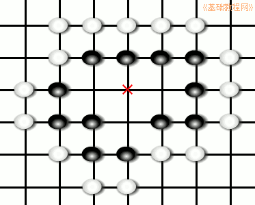
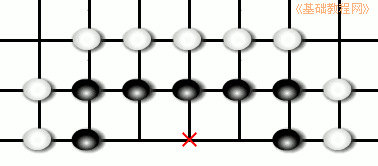
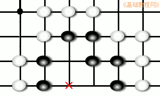
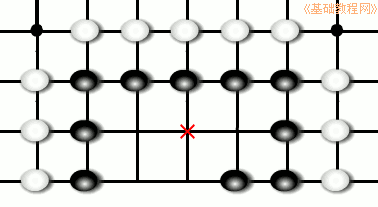

围棋入门基础教程
作者：TeliuTe 来源：基础教程网
要想做出两个眼来，需要多少空位才够呢，下面我们来看一个练习；
1、活棋眼位
1）当空点的形状是直四和曲四时，这快棋总是可以做出两个真眼，因而是活棋；
 
2）这几种形状，不论是先手还是后手，都可以做出两个眼来；

3）角部位置比较特殊，当曲四在角上时，外气一定要足够，否则会形成劫杀；

2、死棋棋形
1）丁四、方四的形状，眼位不足，被对方点眼后，只能做出一个真眼；

2）直三和曲三眼位也不足，被对方点眼后，只能做出一个眼来；
 
3）刀五虽然有五个空点，但是被点眼后，仍然只能做出一个眼来；

本节学习了做眼的基本知识，如果你成功地完成了练习，请继续学习下一课内容；
本教程由86团学校TeliuTe制作|著作权所有
基础教程网：http://teliute.org/
美丽的校园……
转载和引用本站内容，请保留版权信息和本站链接。